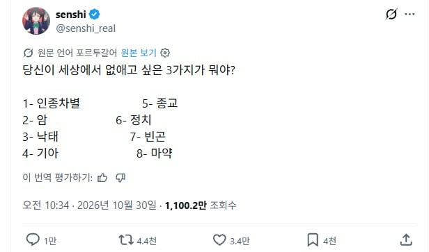

암이 없으면 마약성 진통제 거의 필요없을거 같은데
그래도 세상엔 여러종류의 병이 있으니까..? 라는 생각에
마약성 진통제는 암보다는 상해쪽에서 압도적으로 많이씀
몸하나 크게 수술해봐야지 이런말안하지 ㅋㅋ
7이 없어지면 다른것들도 줄어들음
1, 2, 8
2는 확정인데 나머지가 애매하네 마약은 진통이고 빈곤은 주관적이고 종교도 이로운점이 있고
2 5 8
2 7 8
7만 없애도 나머지 줄어들거나 어느정도 정상화됨
2만 없애고 걍 놔두죠
기아는 안돼 ㅜㅜ
내주식 ㅜㅜ
뭘 3개 씩이나
종교 하나만 없애도 됨
솔직히 암 자리에 치매 들어가야된다고 봄
5,6없어지면 세상 멸망함
2, 4, 8
1,2,4
2,7,4
사실 저 모든건 9.인간 하나만 없어지면 해결되긴해
1,2,4
9. 치매
암, 기아, 마약
좋은점은 없고 무조건 인류의 해악이기만 함
2 5 7
마약은 진통제로도 쓰이니